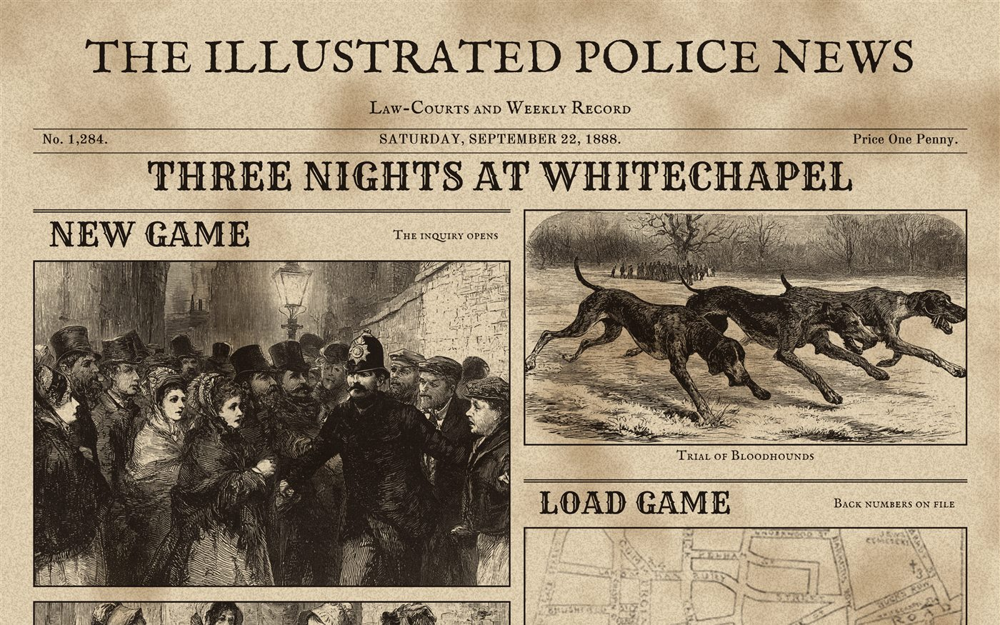
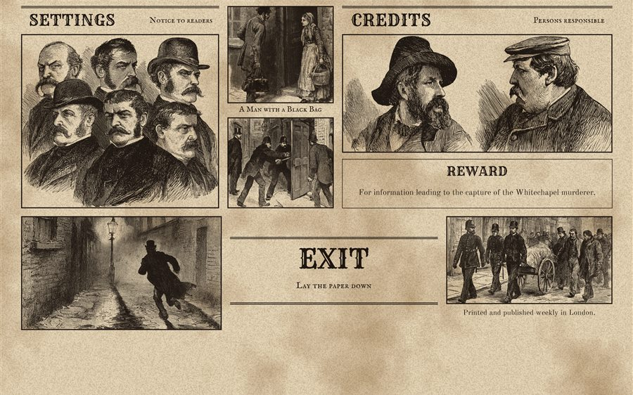
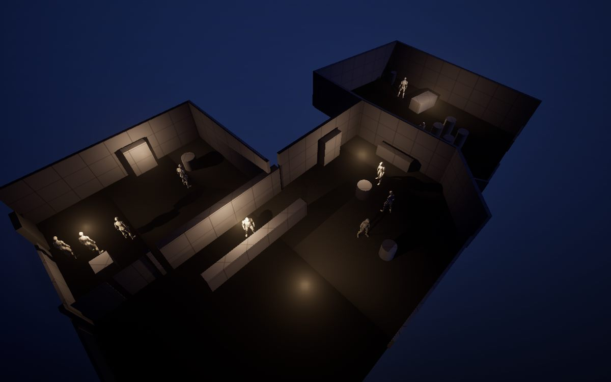

LEVELБлок-аут уступил место интерьерам: ночлежка, игорный дом «Нора», задний двор паба.

Главное меню — выпуск The Illustrated Police News от 22 сентября 1888 года.


LIVE · ОБНОВЛЕНО 22 НОЯБРЯ
Three Nights in Whitechapel
Детективная RPG · Уайтчепел, 1888 · Unreal Engine 5
Лондон, 1888 год. Убийства в Уайтчепеле только начались, а молодой полицейский получает своё первое серьёзное дело. Три ночи, три места преступления — и всё меньше времени до следующего.
Улики можно понять неправильно, свидетели говорят не всё, а на допросе решает бросок кубиков. Игроку нужно самому восстановить, что произошло, и решить, кого арестовать.
Детективная RPG, которую я делаю один, от дизайна до кода на C++. Мой фокус — системы, которые превращают расследование в решения игрока:
- Система фактов: игра помнит каждую находку и каждый ответ в диалоге и меняет мир от ночи к ночи.
- Проверки 2d6: перед броском видно, какие улики и выборы дают бонус.
- Реконструкция: вечером герой сам рассказывает версию событий, и сцена проигрывается по его словам.
Расследование убийств Уайтчепела 1888 года — в духе Disco Elysium.
- Два героя: полицейский-новичок и Мегпай из ночлежки. У каждого своя часть правды.
- Осмотр места, диалоги и проверки 2d6 с видимыми бонусами.
- Своя версия событий, за которую придётся отвечать арестом.
ЭТАПЫСейчас: спринт 3 · прототип 2
- S1 · Основа2–8 нояб.
- S2 · Прототип 1ночь 1 играбельна
- S3 · Прототип 2вся игра каркасом · показ 23.11
- S4 · Срез фичдо 28.11
- Полировкатексты, звук, свет
- Сдача28.12
ДЕВЛОГпоследние записи
DESIGNНовая карта района по картам бедности Чарльза Бута: классы улиц и пометки от руки.
PLAYTESTОбыск у мясника стал самым сильным моментом дня. Вечерняя реконструкция теперь идёт по кускам — по мере рассказа героя.
Ещё записи ↓
DESIGNЖурнал Мегпай: воспоминание, которое помогло в броске, отмечается на доске.
PLAYTESTПервый плейтест дня 1: убраны лишние подсказки в интерфейсе.
DESIGNРамки и орнаменты интерфейса — из журналов 1880-х (CC0).